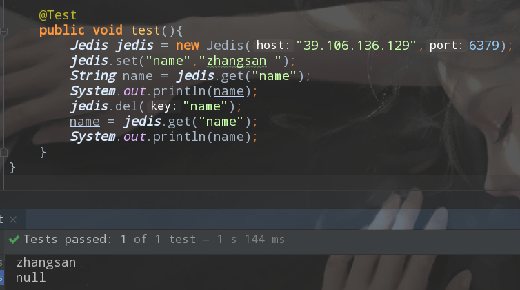

redis远程连接报错protected-mode
防火墙端口无问题的情况下，使用telnet进行测试连接时，连接后报出如下错误
-DENIED Redis is running in protected mode because protected mode is enabled, no bind address was specified, no authentication password is requested to clients. In this mode connections are only accepted from the loopback interface. If you want to connect from external computers to Redis you may adopt one of the following solutions: 1) Just disable protected mode sending the command 'CONFIG SET protected-mode no' from the loopback interface by connecting to Redis from the same host the server is running, however MAKE SURE Redis is not publicly accessible from internet if you do so. Use CONFIG REWRITE to make this change permanent. 2) Alternatively you can just disable the protected mode by editing the Redis configuration file, and setting the protected mode option to 'no', and then restarting the server. 3) If you started the server manually just for testing, restart it with the '--protected-mode no' option. 4) Setup a bind address or an authentication password. NOTE: You only need to do one of the above things in order for the server to start accepting connections from the outside.
进过各种百度，查到的信息是
Redis protected-mode 是3.2 之后加入的新特性，在Redis.conf的注释中，我们可以了解到，他的具体作用和启用条件
protected-mode：处于保护模式，只能本地连接，所以我们需要进行修改配置文件
1、将连接地址注释掉
#bind 127.0.0.1
2、修改运行方式
redis默认不是以守护进程的方式运行，所以我们可以通过配置来进行修改
daemonize no
3、保护模式
protected-mode no
4、启动
启动redis使用./redis-server ./redis.conf，需要连通配置文件一起启动，否则在配置文件中的配置是无法生效的，会使用redis的默认配置（然而并不知道默认配置文件在哪），所以需要指定配置文件进行启动
5、连接成功
